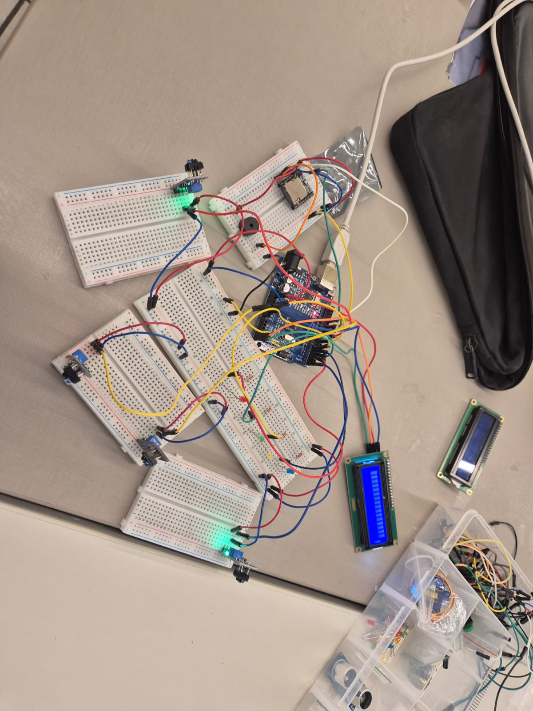
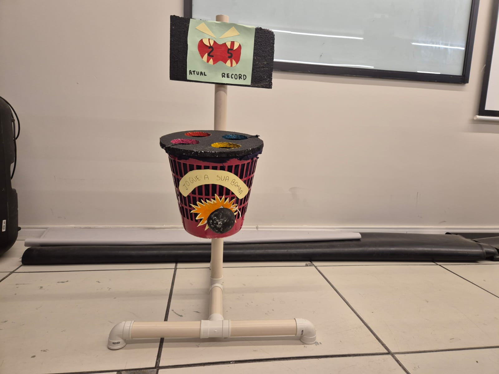

Cata Bomba
Cata Bomba é uma lixeira lúdica com a temática de "Playable City", desenvolvida sob a orientação da disciplina Projetos 1 da CESAR School. Esta lixeira oferece uma maneira divertida de lidar com o lixo, transformando o descarte em um jogo interativo.
A lixeira possui quatro buracos iluminados por LEDs. Quando um LED acende em um
determinado buraco, o jogador pode descartar o lixo ali, marcando pontos. Além disso,
há um placar que exibe a pontuação atual e o recorde, incentivando a competição e a
conscientização sobre a importância da reciclagem.

Circuito

Designer